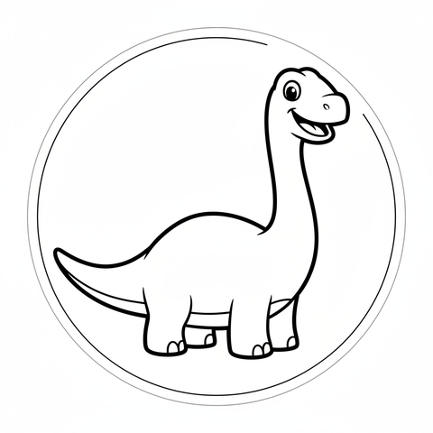
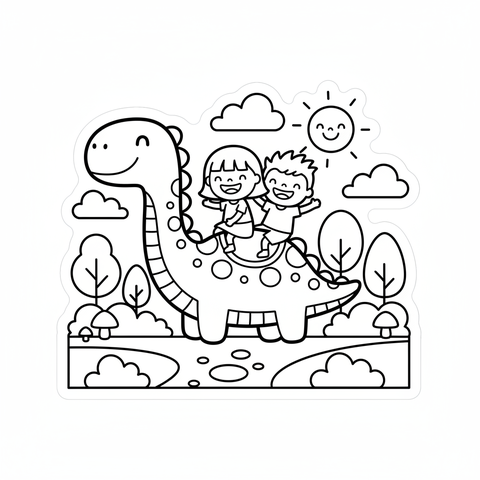
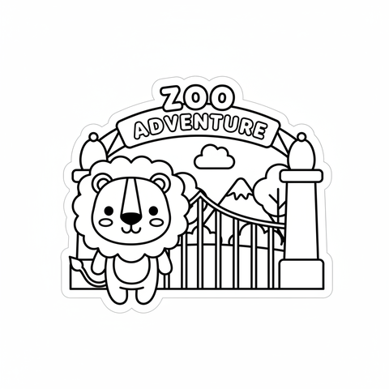

Real maps of your kid's world + AI coloring stickers, printed on the kitchen label printer.
Faint real roads, one dashed route to trace — the actual drive to the zoo, school, or a friend's house.
Describe anything out loud — the label printer spits out a colorable sticker in seconds.
Trip strips show every landmark with drive times. No more "are we there yet?"


